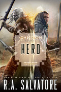

Hero
Écrit par R. A. Salvatore, publié en Octobre 2016.
AVERTISSEMENT
Cette page révèle certaines informations qui pourraient gâcher la lecture du roman. Si vous pensez lire ce livre dans un futur proche, mieux vaut ne pas parcourir ce résumé !
1486. Regis et Wulfgar voyagent dans un chariot en direction de Suzail lorsqu'ils sont attaqués par une petite troupe de six bandits. C'est cependant sans aucun souci qu'ils les neutralisent et les font prisonniers, avant d'être rejoints par Afafrenfere, puis par une troupe des Poneys Grimaçants. Une fois à Suzail, le moine part vers Mulmastre alors que le barbare et le halfelin embarquent pour Delthuntle, en Aglarond. Durant leur voyage sur la Mer des Étoiles Déchues, le navire est avarié lors d'une tempête d'hiver, et la capitaine Mallabie Pudwinker décide de dévier sa course vers Palaggar sur l'île de Prespur. Au même moment, Gromph Baenre invoquait par erreur Demogorgon. Puis Regis arrive enfin à Delthuntle où il retrouve ses ex-compagnons de la bande de voleurs de Morada Topolino, comme le magicien Wigglefingers, mais surtout sa tendre Donnola Topolino, qu'il a quittée il y a maintenant 5 ans.
En Damarie, le riche Yarin Frostmantle a succédé au roi paladin Murtil Dragonsbane, mort dans de mystérieuses circonstances, et attend désespéramment un héritier de sa reine Concettina, sous peine d'en finir avec elle comme il l'a fait avec ses six épouses précédentes pour ne pas avoir comblé ses attentes. Puis un groupe de nains se réclamant d'un clan inconnu nommé Bigger vient se mettre aux ordres du roi tout en lui offrant un coffre rempli d'or. En fait, des géants payés par Charri, prêtresse drow de la maison Hunzrin, des commerçants qui espèrent ainsi gagner les faveurs de la maison Baenre. La même qui renvoie plus tard ces « nains » offrir à Yarin deux colliers en or et argent ornés d'une grande pierre précieuse, laquelle ne renferme rien de moins que Malcanthet, la reine des succubes. L'un pour le roi et l'autre pour la reine.
Dans l'Outreterre, Demogorgon est maintenant mort, et Drizzt se rend à Gauntlgrym. Il y retrouve tous ses amis, mais il n'est plus le même. Yvonnel a perturbé son esprit, et le rôdeur en vient à attaquer Catti-brie, croyant avoir à faire avec un démon. Mais Drizzt aime Catti-brie plus que sa propre vie, et le plan d'Yvonnel échoue. Kimmuriel tente alors par ses pouvoirs psioniques de pénétrer l'esprit du drow pour l'aider, mais il ne peut que constater la maladie, d'origine magique, qui fait que Drizzt déforme la vérité. Lui seul peut s'en sortir, du fond de lui-même. Les deux dragons Ilnezhara et Tazmikella proposent alors à Jarlaxle de l'emmener avec Drizzt face au grand maître des fleurs du monastère de la Rose Jaune, Kane. Là, Jarlaxle abandonne le rôdeur à Afafrenfere, puis retourne à Luskan où l'assemblé des mages parvient à contrôler le primordial de feu dans sa fosse grâce aux élémentaires d'eau. Au monastère, après divers exercices dirigés par Shin, Drizzt affronte le grand maître Kan, qui ne porte ni arme ni armure. Si l'elfe noir domine à la perfection le feu/le corps, il lui manque le contrôle de la pensée/l'eau. De son côté Yvonnel quitte Menzoberranzan et rejoint Luskan où elle annonce à tous que la maladie de Drizzt est une malédiction qu'elle-même lui a jetée et que les moines n'y pourront rien. Avec l'accord de tous, même si personne ne comprend pourquoi Yvonnel veut maintenant aider l'elfe noir, elle voyage alors ensuite jusqu'au monastère de la Rose Jaune avec Artemis Entreri. Kan fait alors sortir Drizzt, toujours affecté par ses démons internes. Puis le rôdeur tombe face à face avec l'assassin, qui le provoque, et le duel s'engage. Au final Drizzt a la possibilité de tuer Entreri, mais tout comme face à Catti-brie, il ne peut s'y résoudre. C'est ce moment qu'attendait Yvonnel pour entrer dans l'esprit de l'elfe noir et lui ôter sa malédiction. La prêtresse de Lolth laisse derrière elle Menzoberranzan. Sa déesse le lui pardonnera-t-elle un jour ?
À Delthuntle, lors d'un bal, un noble local, Lord Delcasio, le père de Concettina, demande à Donnola de sauver sa fille et de tuer le roi Yarin de Damarie, avec lequel il a pourtant lui-même arrangé le mariage de sa fille. Et c'est ainsi que quelques temps plus tard Regis et Wulfgar arrivent au port de New Sarshel en Impiltur, puis accompagnent une caravane jusqu'à Helgabal, la capitale de Damarie. Là, un contact de Morada Topolino les introduit comme représentants d'un consortium de Delthuntle voulant vendre des vins à la cour royale. Regis se retrouve alors face au roi de Damarie et à Concettina, mais celle-ci parait tout sauf faible ou dominée, l'esprit de Malcanthet ayant commencé son emprise. À la nuit tombée, le barbare s'introduit dans la chambre de la reine. Mais la reine des succubes lui dévoile sa véritable nature et l'enferme dans son miroir magique, avant de s'attaquer aux gardes du roi qui voulaient intervenir, puis de s'échapper. Mais, avec l'aide d'un nain druide nommé Pikel, Regis parvient à retrouver la piste du démon, qui les conduit jusqu'au repaire des géants qu'ils partagent avec des gobelins. Toutefois, les intrus sont surpris, et Pikel, gravement blessé, n'a que la possibilité de fuir en laissant Regis derrière lui. Il sera recueilli plus tard par des halfelins qui iront chercher Drizzt au moment où, guéri, il allait quitter le monastère. Suivant les indications fournies par le druide, le rôdeur et l'assassin retrouvent le complexe de Smeltergard et, aidés par la panthère Guenhwyvar, ils éliminent les géants les uns après les autres, puis affrontent Malcanthet elle-même. Le combat est épique, Drizzt et le démon sont gravement blessés. Et c'est lorsque Regis sort de sa cachette que la reine des succubes prend la fuite. Mais elle n'en a pas fini. Ailleurs dans le souterrain, elle se retrouve face à Yvonnel et les drows de la maison Hunzrin qui ont prévu un habile subterfuge en modifiant l'apparence d'un géant pour qu'il ressemble à Graz’zt, l'ennemi personnel de Malcanthet. Le démon, trop affaibli par son combat contre Drizzt, préfère abandonner et se téléporte loin dans les Abysses, libérant de fait Concettina.
Ne reste plus qu'à sauver Wulfgar, enfermé dans ce miroir piégeur de vies. De 10 vies. Toutes prises. Et chaque nouvelle créature qui regarde le miroir se retrouve prisonnière de ce dernier, tout en libérant au hasard une des précédentes victimes. Plusieurs gobelins seront nécessaires pour voir enfin réapparaître le barbare. Le temps d'échapper à une hydre, qui était elle aussi prisonnière du miroir, et tous se retrouvent sains et sauf avec Yvonnel et la reine de Damarie. Tous sauf Drizzt, qui est mourant. Or la prêtresse drow sait qu'elle n'a plus accès aux puissants sorts de Lolth depuis qu'elle a sauvé le rôdeur. Yvonnel s'offre alors à sa déesse, qui apparaît physiquement face au groupe, en échange de soins pour Drizzt, ce qui lui est accordé. Puis Lolth demande à celui qu'elle veut qu'il soit son champion de la vénérer, ce qu'il refuse. La déesse l'embrasse, lui déclare « je ne suis pas que souffrance, je suis aussi plaisir », puis ajoute « la vie est ennuyeuse sans ennemis » avant de disparaître.
1487. Yarin Frostmantle est assassiné dans son sommeil, étouffé. Officiellement son cœur n'a pas supporté le stress des derniers événements. Enteri a fait son travail... et Regis annonce son mariage. Le monde est en paix.
♦
Maisons nobles de Menzoberranzan en 1487
- Maison Baenre. Officiellement la matrone en est toujours Quenthel Baenre, même si en fait c'est Yvonnel qui contrôlait le conseil des Huit, avant que celle-ci quitte la cité drow, rappelée à l'ordre par un émissaire de Lolth.
- Maison Barrison Del'Armgo. La matrone est Mez'Barris Armgo. Maison tournée vers les arcanes mais possédant également les plus grands guerriers. Grande rivale des Baenre.
- Maison Faen Tlabbar. La matrone est Vadalma Tlabbar. Maison fanatique de Lolth. Alliée de Baenre.
- Maison Mizzrym. La matrone est Miz'ri Mizzrym. Alliée de Baenre.
- Maison Xorlarrin. La matrone est Zeerith Xorlarrin. Revient dans le conseil des Huit en remplacement de la Maison Do'Urden qui disparaît suite au départ de Dahlia. Allié de Baenre.
- Maison Fey-Branche. La matrone est Byrtyn Fey.
- Maison Vandree.
- Maison Melarn. La matrone est Zhindia Melarn. Maison fanatique de Lolth. Passe du 6ème au 8ème rang suite à sa trahison contre la maison Baenre.
♦
Les 17 rangs de l'ordre de la Rose Jaune en 1487
- 17ème. Grand maître des fleurs (Kan)
- 16ème. Maître du printemps (→ Perrywinkle Shin à partir de 1488)
- 15ème. Maître de l'été (Perrywinkle Shin)
- 14ème. Maître de l'automne
- 13ème. Maître de l'hiver (→ Savahn à partir de 1488)
- 12ème. Maître du vent d'Est (Savahn → Afafrenfere à partir de 1488)
- 11ème. Maître du vent du Sud (Afafrenfere)
- 10ème. Maître du vent d'Ouest (→ Halavash à partir de 1488)
- 9ème. Maître du vent du Nord
Suivent ensuite les rangs de Maître des dragons, Maître supérieur, Maître, Frère immaculé et Frère. Pour eux la terre représente le monde matériel, l'air la spiritualité, le feu la perfection du corps, et les arts martiaux et l'eau la pensée.